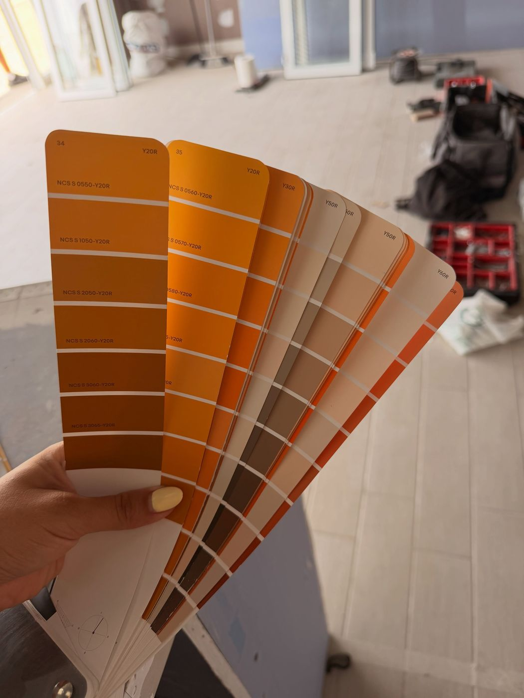
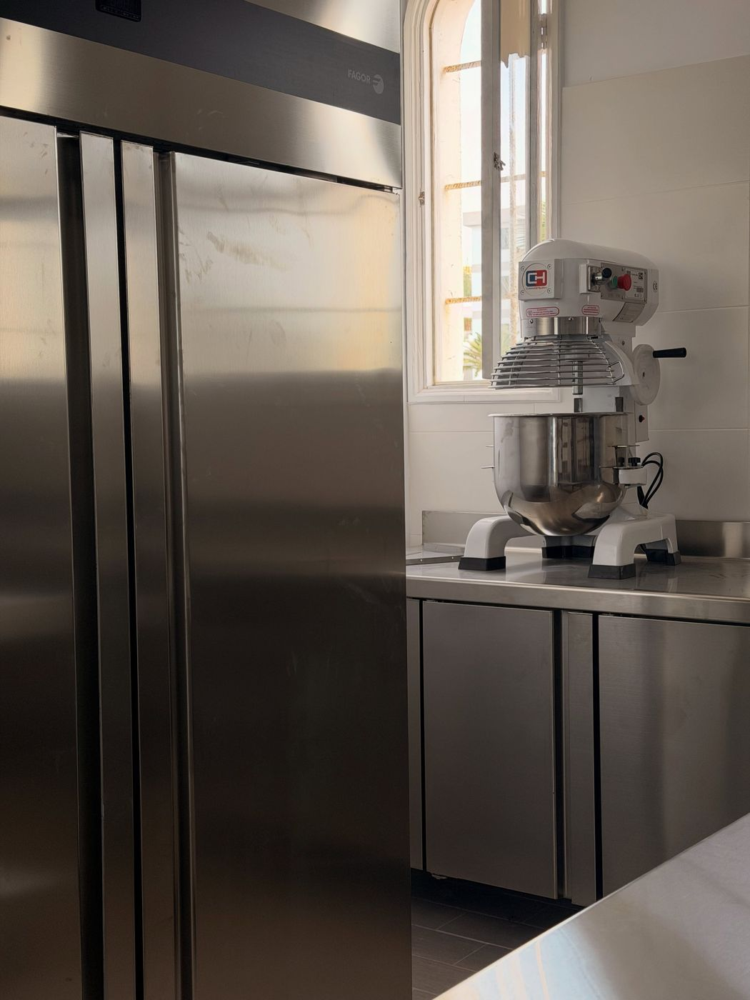
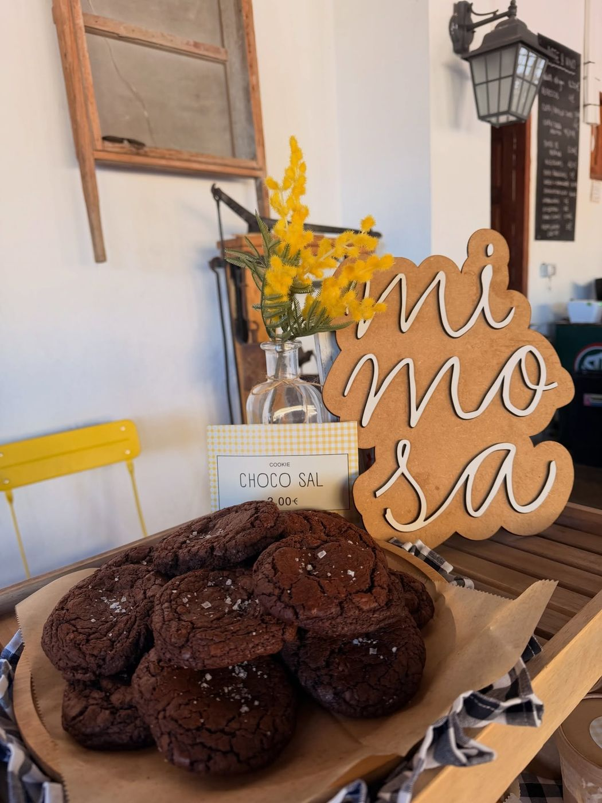
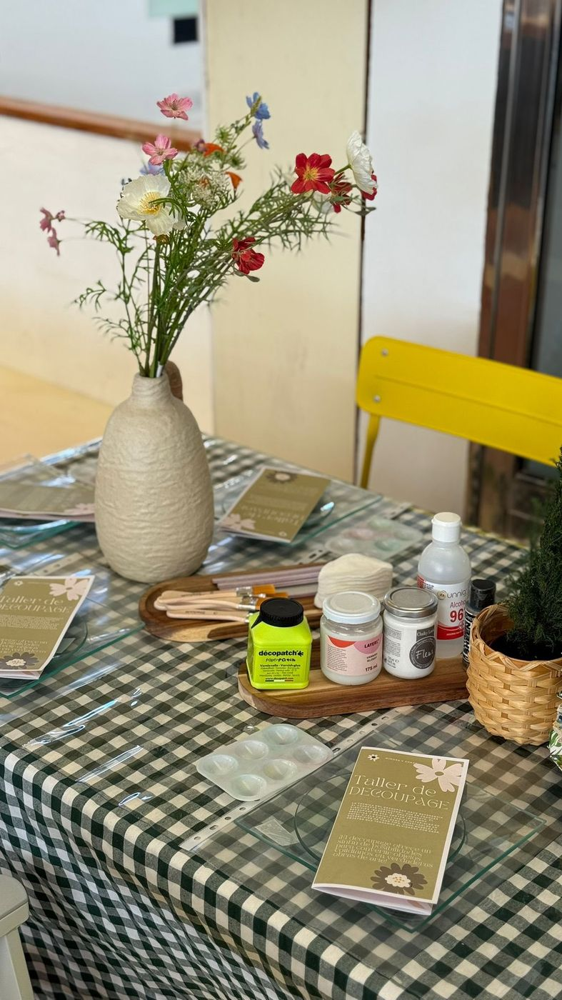
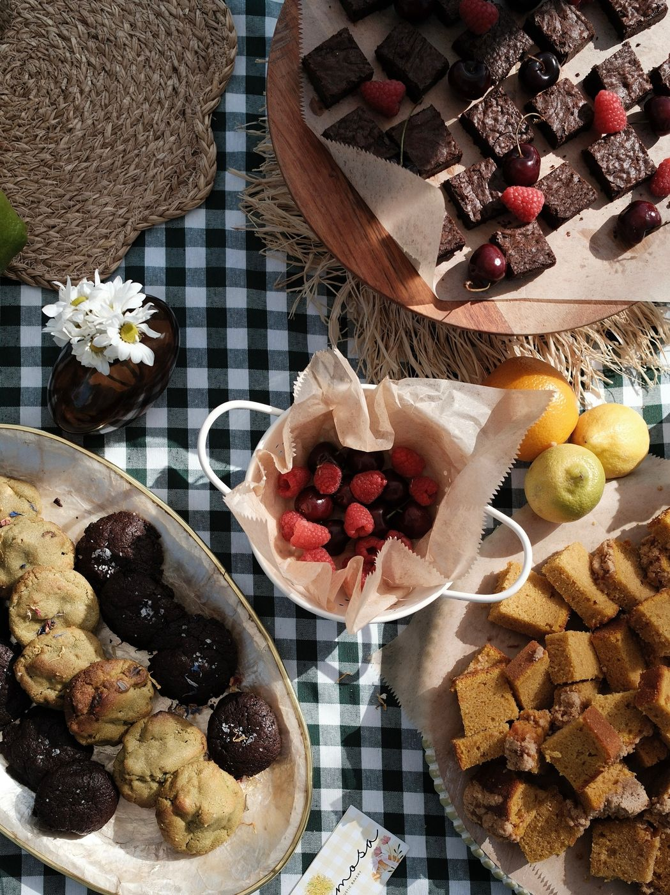

Inicio / Nosotros
La historia
Hola, soy Julia

Soy la persona que está detrás de Mimosa desde hace dos años. Muchos nos acabáis de conocer, pero antes de tener casa propia Mimosa fue encargos, mesas dulces, catas, talleres y markets por toda la isla.
La pasión por la pastelería se la debo a mi maestra, que me enseñó las bases y, sobre todo, a respetar este oficio. De ahí viene la forma de trabajar: recetas propias, ingredientes de verdad y mucho cuidado en cada detalle.
Ahora Mimosa tiene casa en la Plaza de los Cocoteros: un espacio lleno de colores y flores donde queremos que te sientas como en casa.
— Julia
Nosotros
Una pastelería
con alma de casa
Mimosa nació en mercadillos y eventos, de bandeja en bandeja, antes de tener por fin su propio local en San Agustín.
Así nació el local
De la obra
a la vitrina
Formaciones, pedidos, una obra que parecía no acabar nunca y mil detalles: elegir colores, montar el obrador y llenar la vitrina por primera vez.








Cómo lo hacemos
Tres cosas que
no cambiamos
Hecho a mano, cada día
Horneamos en pequeñas tandas para que todo llegue a la vitrina en su punto.
Recetas que escuchan
Probamos, preguntamos y mejoramos. Hasta organizamos catas con clientes para afinar nuestra tarta de queso.
Flores y detalles
Flores comestibles, cajas pintadas a mano y cada mesa pensada como si fuera para casa.
